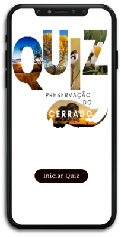

Esse é um quiz que medirá o quanto você sabe sobre a preservação do Cerrado
1. Esse quiz terá 9 questões.
2. Inicie o quiz e insira o seu nome.
3. Marque as questões e envie para obter o seu resultado.
Agora venha aproveitar este quiz e testar a suas capacidades.